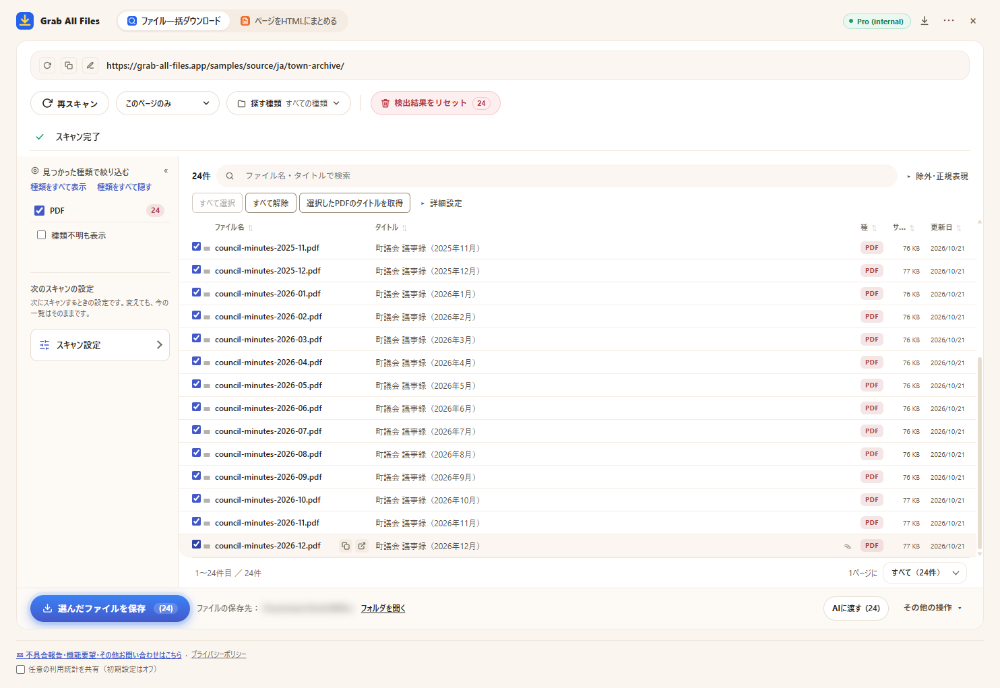

Grab All Files の実際の出力サンプル
PDF 24件を1回でまとめてダウンロードした結果（Pro版）
架空の町の議事録保管庫（2025年1月〜2026年12月の毎月の議事録、PDF 24件）をスキャンし、PDFを全部選んで1回で保存しました。無料版は1回に10件までなので3回に分けることになりますが、Pro版は件数の上限なしで1回で保存できます。ファイル名は、拡張機能が各PDFのタイトルから付けたものです。
出力ファイル
- 町議会 議事録（2025年1月）.pdf
- 町議会 議事録（2025年2月）.pdf
- 町議会 議事録（2025年3月）.pdf
- 町議会 議事録（2025年4月）.pdf
- 町議会 議事録（2025年5月）.pdf
- 町議会 議事録（2025年6月）.pdf
- 町議会 議事録（2025年7月）.pdf
- 町議会 議事録（2025年8月）.pdf
- 町議会 議事録（2025年9月）.pdf
- 町議会 議事録（2025年10月）.pdf
- 町議会 議事録（2025年11月）.pdf
- 町議会 議事録（2025年12月）.pdf
- 町議会 議事録（2026年1月）.pdf
- 町議会 議事録（2026年2月）.pdf
- 町議会 議事録（2026年3月）.pdf
- 町議会 議事録（2026年4月）.pdf
- 町議会 議事録（2026年5月）.pdf
- 町議会 議事録（2026年6月）.pdf
- 町議会 議事録（2026年7月）.pdf
- 町議会 議事録（2026年8月）.pdf
- 町議会 議事録（2026年9月）.pdf
- 町議会 議事録（2026年10月）.pdf
- 町議会 議事録（2026年11月）.pdf
- 町議会 議事録（2026年12月）.pdf
PDF 24件を選んだ拡張機能の画面（保存の直前。保存先の表示はぼかしています）

作成条件
- 元にしたページ
- /samples/source/ja/town-archive/
- 拡張機能
- Grab All Files 5.8.31
- ブラウザ
- Chrome 156.0.8078.48 (Windows 11)
- プラン
- Pro版
- 作成日
- 2026-10-28
- 設定
- リンクをたどる深さ：このページのみ
- ファイルの種類：PDFだけ
- 選んだファイル：24件
- 保存先：ブラウザのダウンロードフォルダ（GrabAllFiles フォルダ）